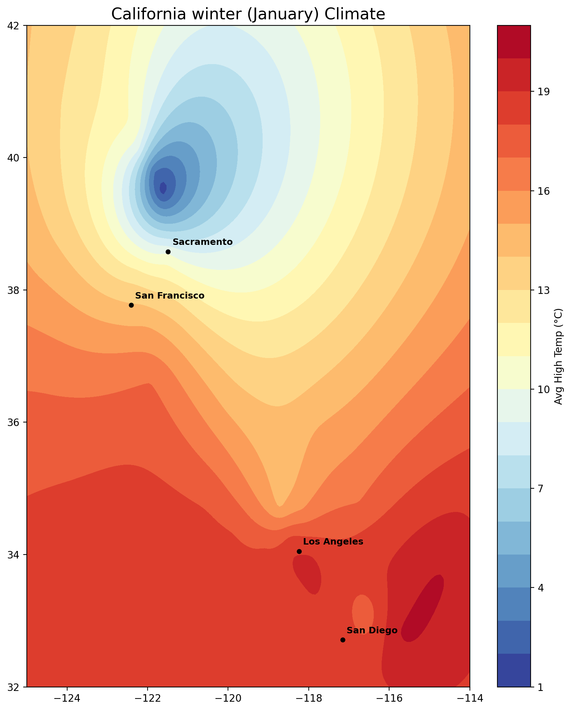
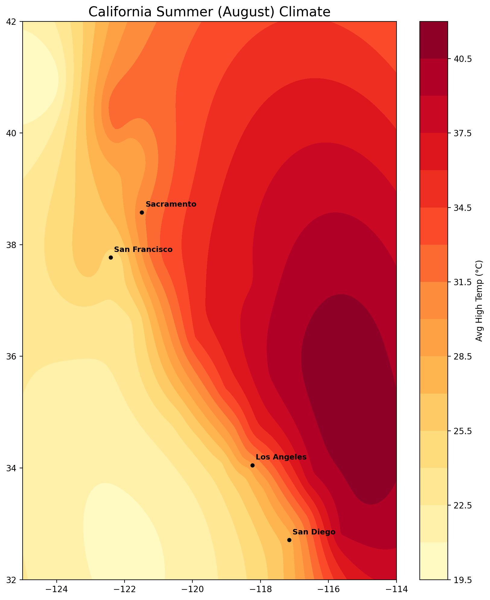

Unit 01: 공간 보간 및 지구통계학 (Spatial Interpolation & Geostatistics)
도구 숙련자 및 오퍼레이터 양성
ArcGIS 워크플로우는 사용자가 직접 화면의 버튼을 누르고, 설정 값을 입력하여 통계 마법사를 실행하는 데 중점을 둡니다.
NOAA 웹사이트에서 CSV 데이터를 다운로드하고, 'Display XY Data' 기능을 사용하여 숫자를 지도 위의 실제 점으로 변환합니다.
복잡한 통계 계산을 도와주는 마법사 창을 통해 EBK(Empirical Bayesian Kriging) 모델을 선택합니다.
분석된 온도 지도를 바탕으로 각 도시 경계 내의 평균 온도를 계산하여 최종 테이블을 도출합니다.
※ 오퍼레이터의 필수 관문: 단계별 버튼 클릭 가이드
[1단계] 점 데이터 생성 (Display XY Data) 데이터 레이어 우클릭 ▶ Display XY Data| X Field / Y Field | Longitude / Latitude 지정 |
|---|---|
| Coordinate System | WGS 1984 지정 |
| Dataset / Data Field | 관측소 레이어 / TEMP 필드 지정 |
|---|---|
| Optimize | 최적화 버튼 클릭 후 [Finish] |
| Input Zone / Value Raster | 도시 경계 폴리곤 / 온도 래스터 |
|---|---|
| Statistics Type | Mean (평균) 선택 |
지식 창조자 및 GIS 엔지니어 양성
파이썬 방식은 API를 통한 자동 수집과 수학적 알고리즘 직접 제어에 집중합니다. 이번 실행에서는 Meteostat에서 1991-2020 기후 정상값을 가져오고, PyKrige로 1월/8월 기온면을 만든 뒤, 도시 경계 자료와 겹쳐 PDF 리포트를 자동 생성했습니다.
매번 웹사이트에 접속하는 대신 meteostat 라이브러리를 사용하여 코드가 기상청 서버에서 데이터를 긁어옵니다.
마법사 창 대신 OrdinaryKriging 클래스를 호출합니다. 수학 공식을 코드에 직접 넣어 격자판의 숫자를 계산합니다.
결과를 파일로 저장하지 않고 컴퓨터 메모리 위에서 rasterstats를 사용하여 평균값을 즉시 뽑아냅니다.
※ 지식 창조자의 무기: 실제 PDF 리포트를 생성하는 데 사용된 파이썬 엔진의 핵심 심장부입니다. (주석: 초보자 눈높이 설명)
[핵심 로직 1] 인터넷 기상청에서 자료 긁어오기 (API 수집)파이썬 자동화 엔진 기반 최종 기후 분석 결과물
ArcGIS Pro를 전혀 사용하지 않고, 오직 파이썬 엔지니어링 기술만으로 데이터 수집, 공간 연산, 시각화, 문서화를 자동 수행한 결과입니다. Kriging 및 Zonal Statistics 알고리즘을 코드로 구현하여 캘리포니아 전역의 도시별 기온을 추정한 전문 분석 보고서입니다.
PyKrige 알고리즘 기반 자동화 보간 분석 결과
PyKrige 라이브러리를 활용하여 구현된 수학적 크리깅(Kriging) 결과입니다.
Meteostat API를 통해 실시간 기상 데이터를 수집하고, 전처리부터 공간 보간 연산 및 시각화까지 전 과정을 자동화하여 도출한 실제 분석 맵입니다.

January Max Temperature (Python Kriging)

August Max Temperature (Python Kriging)